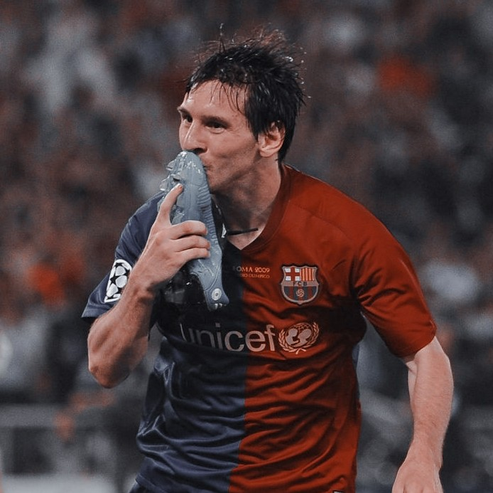

Lionel Andrés Messi Cuccittini é amplamente considerado um dos maiores jogadores de futebol de todos os tempos. Nascido em 24 de junho de 1987 na Argentina, Messi conquistou inúmeros títulos e prêmios individuais, incluindo oito Bolas de Ouro.
Durante sua carreira no Barcelona, ele quebrou diversos recordes, tornando-se o maior artilheiro da história do clube. Em 2021, transferiu-se para o Paris Saint-Germain e, em 2022, liderou a Argentina à conquista da Copa do Mundo.
Com sua habilidade incomparável, dribles desconcertantes e uma visão de jogo extraordinária, Messi continua encantando fãs do futebol ao redor do mundo.
Aos 37 anos, o atacante do Inter Miami tem 852 gols na carreira sendo feito em 35 países diferentes ao longo de toda sua carreira.
No total, Messi tem 44 títulos oficiais como profissional, número que o faz liderar absoluto esta estatística.
Siga Lionel Messi no Instagram.Lionel Messi e Cristiano Ronaldo são dois dos maiores jogadores da história do futebol, e sua rivalidade tem sido uma das mais intensas e discutidas no esporte. Durante anos, ambos dominaram o cenário mundial, com um sempre sendo comparado ao outro. Essa competição não é apenas sobre gols e títulos, mas também sobre estilo de jogo, personalidade e legado.
Messi, com seu controle de bola mágico e dribles imprevisíveis, representa a essência do futebol jogado de forma natural e artística. Por outro lado, Cristiano Ronaldo é o exemplo de trabalho árduo, força física e dedicação, com um faro de gol impressionante.
A rivalidade entre eles não se limita aos campos de futebol, mas também permeia as redes sociais e discussões entre fãs ao redor do mundo. Embora tenham estilos diferentes, ambos conquistaram uma enorme legião de seguidores, e suas performances geraram debates intermináveis sobre quem é o melhor de todos os tempos.
